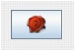
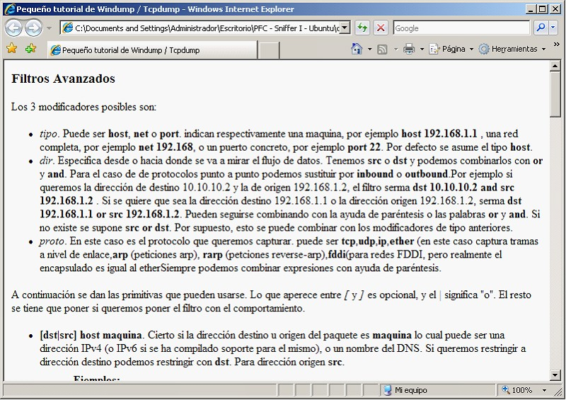

Captura desde fichero
Esta alternativa, mostrará la ventana que sigue a continuación:

Funciones disponibles:
- Escoger el dispositivo de captura (fichero almacenado en disco) desde al cual esnifar los paquetes que se encuentren guardado en un fichero. Pulsando, sobre este Icono
 aparecerá una ventana que permitirá escoger el lugar del cual se leerán los ficheros capturados.
aparecerá una ventana que permitirá escoger el lugar del cual se leerán los ficheros capturados.
- En la sección de filtros se pueden aplicar aquellos que se estimen oportunos de cara a realizar capturas que se adecúen a los requisitos.

- Existe la posibilidad de seleccionar filtros avanzados, para conocer cuál es la mejor forma de realizarlo, hay disponible una ayuda online que aparecerá al pulsar el siguiente botón:

La ventana emergente sera similar a esta

- Se puede seleccionar el lugar donde se guardarán el/los fichero/os capturado/os.

- Pulsando, sobre este Icono
 aparecerá una ventana que permitirá escoger el lugar donde se almacenarán los ficheros capturados.
aparecerá una ventana que permitirá escoger el lugar donde se almacenarán los ficheros capturados.

- Dentro de las opciones de múltiples ficheros, se puede establecer aquella combinación que más se adecue a los requerimientos.

- Existe la capacidad de escoger las condiciones de parada automática de la captura, esta se podrá producir por varios motivos:
- Después de un número determinado de paquetes capturados
- Tras haber capturado un número determinado de Kbs,Mbs o Gbs
- O tras haber estado capturando información durante un tiempo especificado a tal efecto.

Finalmente, tras haber seleccionado todas aquellas condiciones que se estimen oportunas, se confirmara la selección pulsando el botón de aceptar:
O anular las operaciones realizadas, pulsando el botón cancelar

En el caso de haber confirmado la selección pulsando el botón aceptar, aparecerá la ventana principal con la información correspondiente a la captura realizada desde fichero en esta ocasión.
Copyright © 2010, <Carlos Mardones Muga>
Created with the Freeware Edition of HelpNDoc: Easily create PDF Help documents